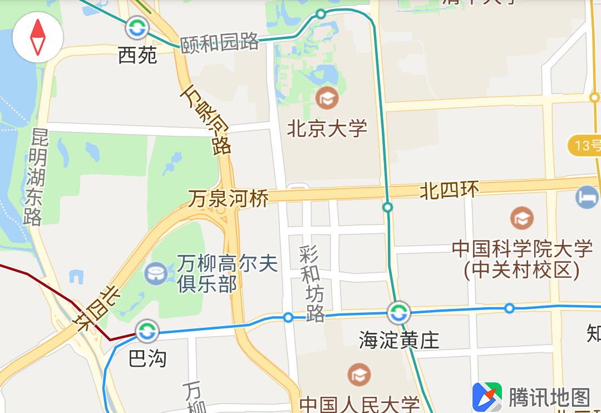

基础控件设置
简介
地图控件包含 Logo、比例尺、指南针等。
logo
在您的应用中使用我们的地图 SDK 时，按照腾讯地图开放API服务协议我们要求始终保持我们的logo 是可见的，不允许对腾讯地图的 logo 进行遮盖、修改等弱化地图品牌的行为。
调整大小
我们的 logo 虽然不允许关闭，但如果开发者在使用地图时需要展示一个小尺寸的地图，标准尺寸的 logo 可能会影响地图的内容展示，所以我们提供了一个接口允许用户在一定范围内调整 logo 的大小。
setLogoScale(float logoScale)
logoScale 设置Logo的缩放比例，比例范围(0.7~1.3)
比例尺
比例尺是表示图上一条线段的长度与地面相应线段的实际长度之比，是地图使用过程中帮助用户了解实际距离不可缺少的工具。在地图 SDK 中，比例尺只有在地图缩放时才会淡入展示，当地图停止缩放会淡出消失，所以虽然比例尺是默认打开的，但在地图静止时用户可能看不到比例尺。
开关
与 logo 不同，比例尺控件允许关闭。地图控件相关的控制在
UiSettings类中提供，用户可以通过TencentMap.getUiSettings()获取这个类的实例。setScaleViewEnabled(boolean show)
show 控件是否展示
指南针
可以指示地图的南北方向，默认是关闭的状态，并且该控件的默认点击事件会将地图视图的俯仰角和偏航角动画到0的位置。
开关 与比例尺一样，它的开关控制接口由
UiSettings类提供。setCompassEnabled(boolean enabled)
enabled 控件是否展示
下图左上角为腾讯地图 SDK 提供的指南针：
